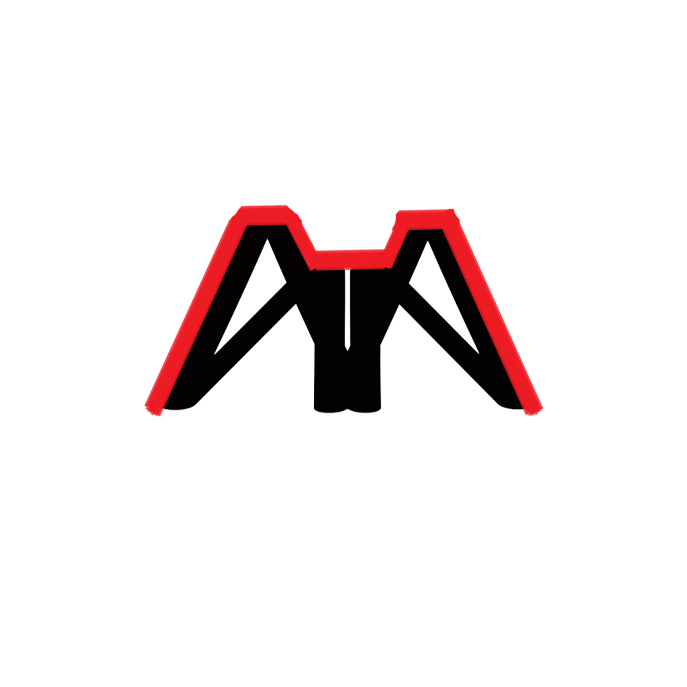
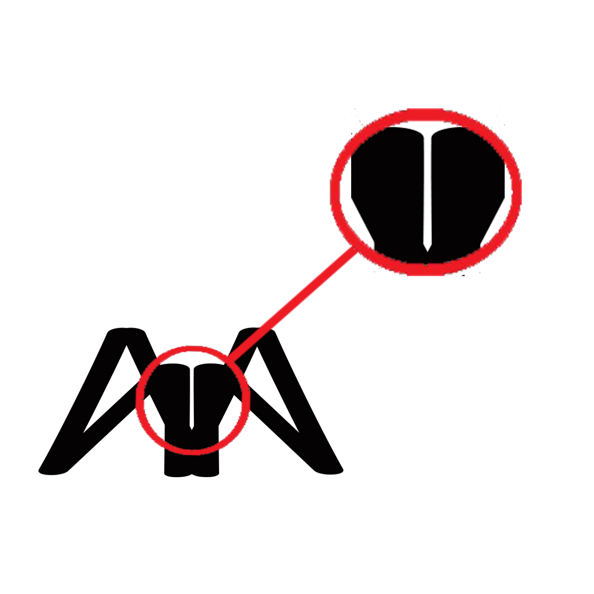
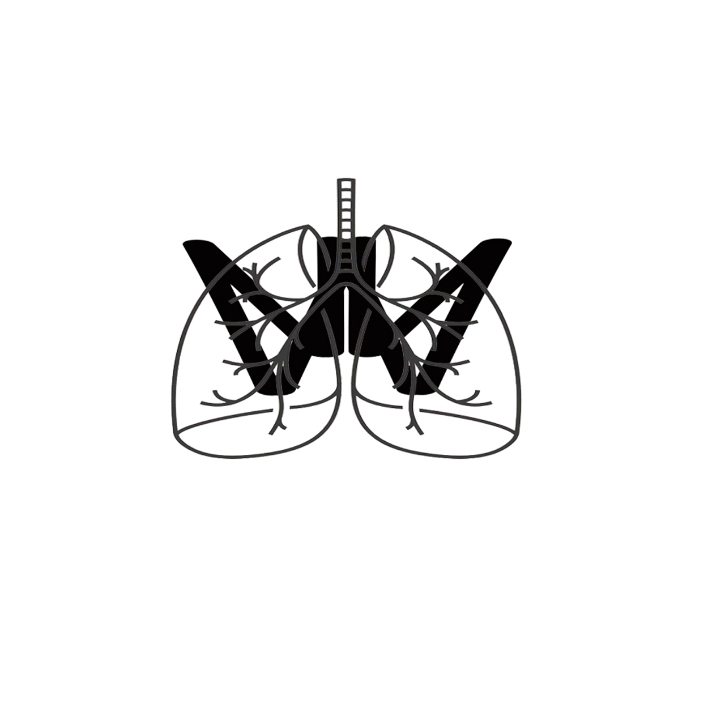
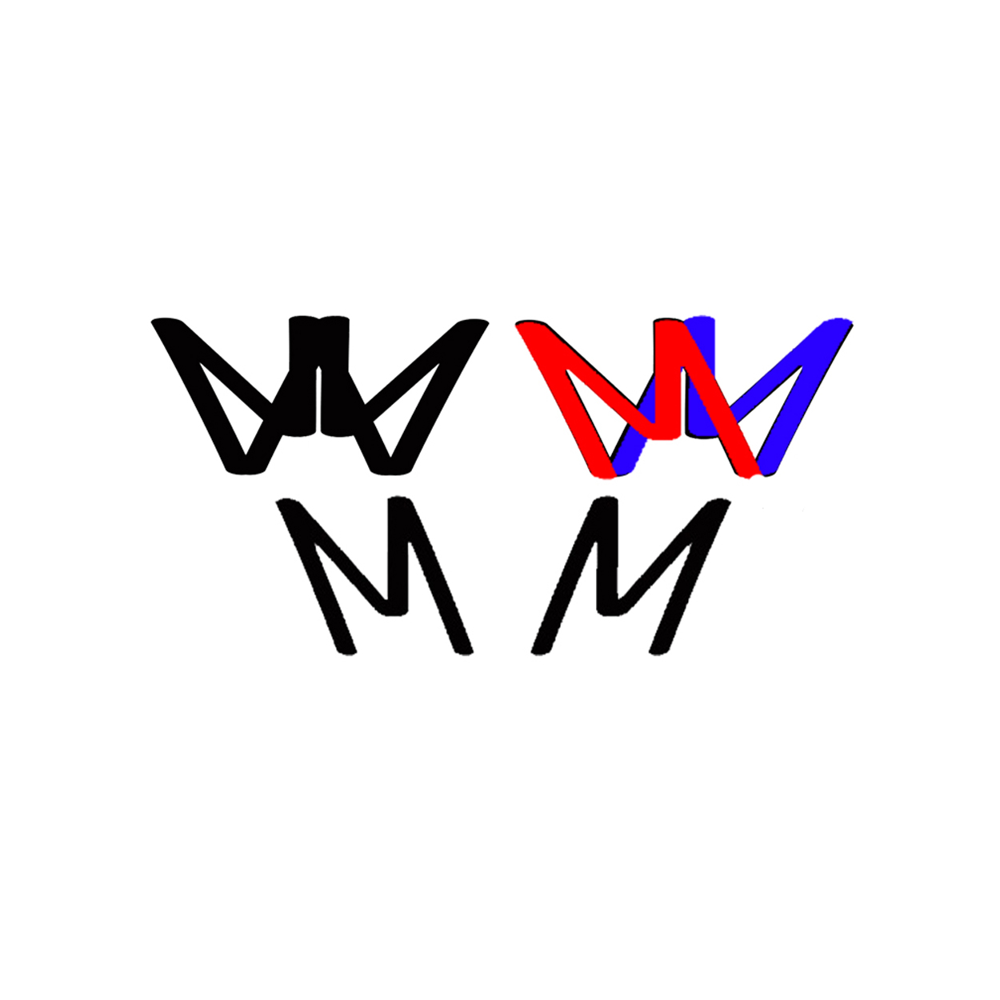
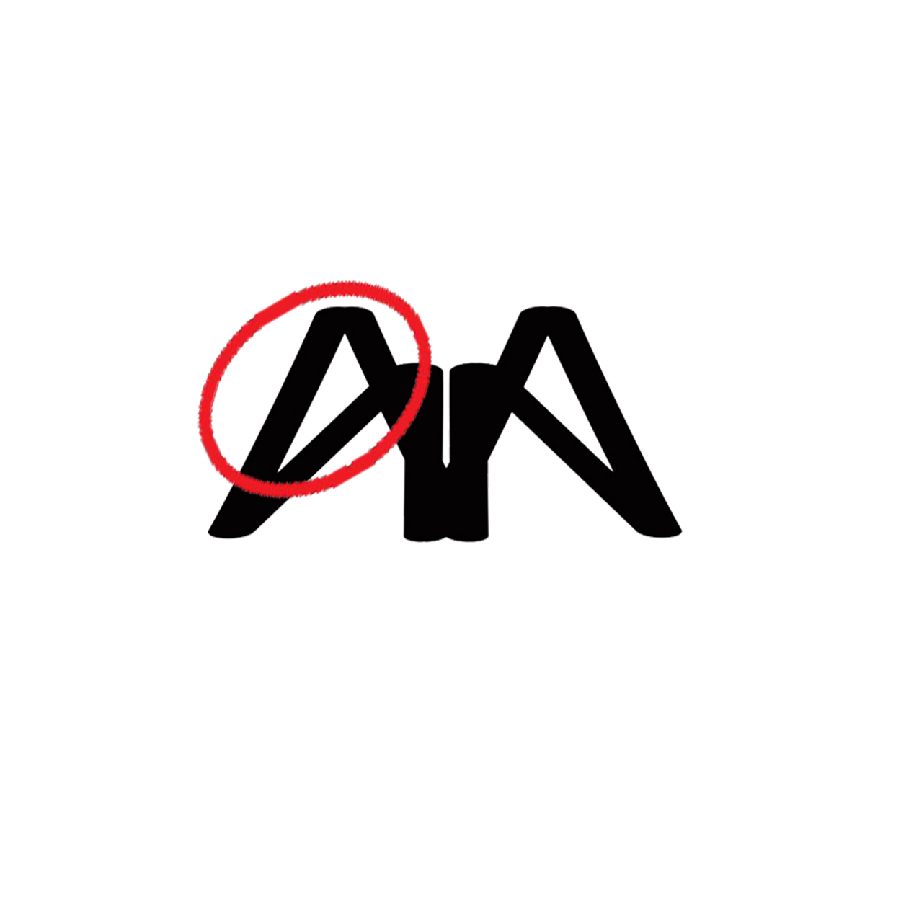

My Personal Logo
Explained
Let's Talk About My Logo

What's in my LOGO?

This part signifies ups and downs in life. It also represents progress.

If we will zoom in the middle, we'll see an image of a pen.
The pen is the most common instrument for writing.

Its upside-down version represents the human lungs which is
responsible for breathing. For me, to breath means to write and perform.

If we will break it down (the upside-down v.), two "M(s)" will be
produced which are the initials of my first and last name.

To give emphasis to its other details, I inverted it and write my name using the Paper Flowers
font below it. You can also notice the letter A which is the only vowel in "Marc Manansala".
“There’s a reason poets often say, ‘Poetry saved my life,’
for often the blank page is the only one listening to
the soul’s suffering, the only one registering the story
completely, the only one receiving all
softly and without condemnation.”